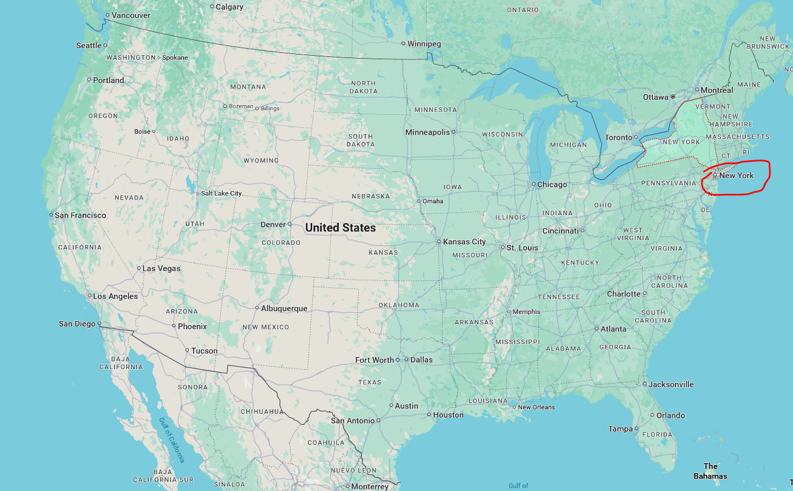
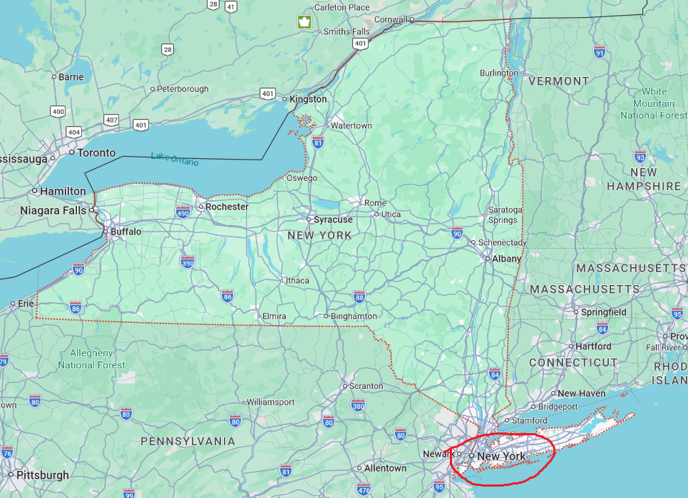
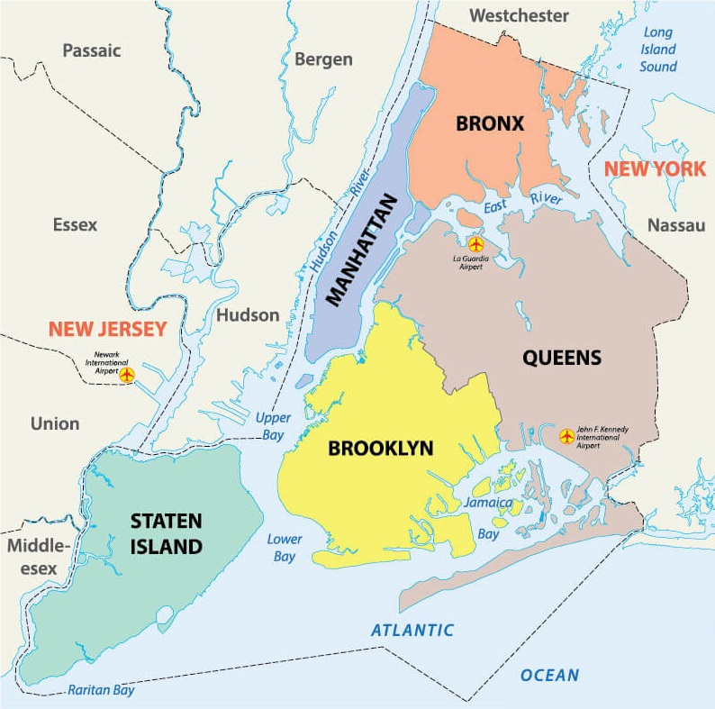
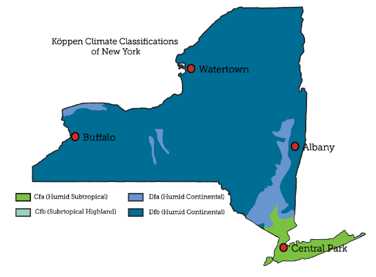
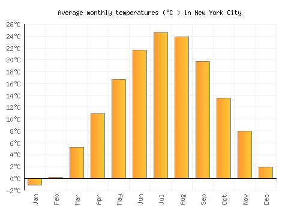
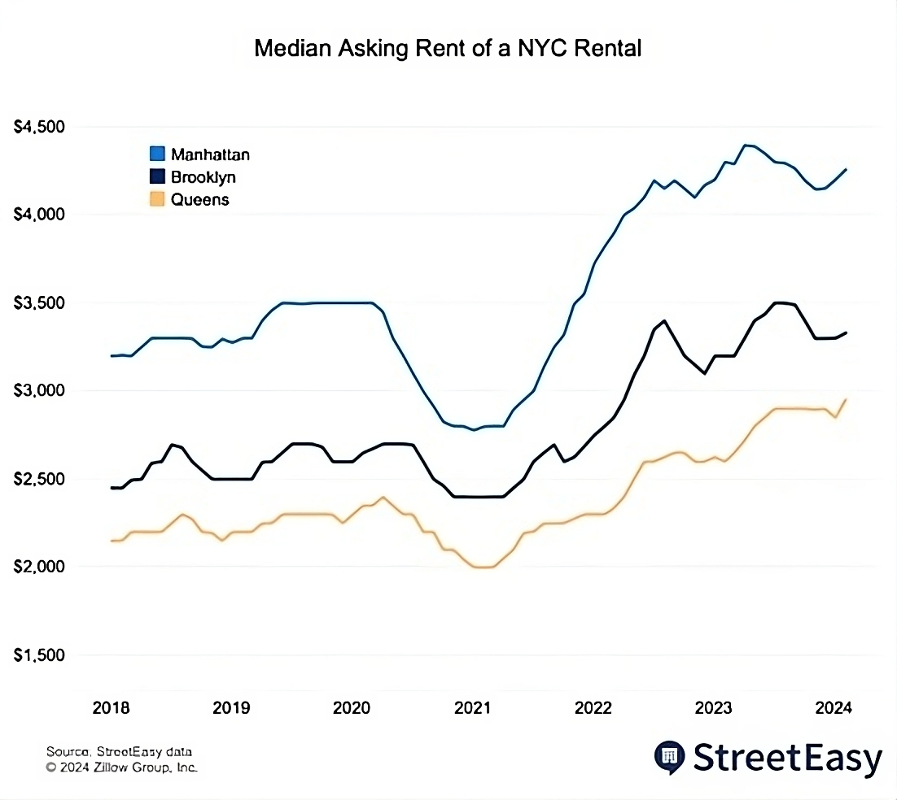
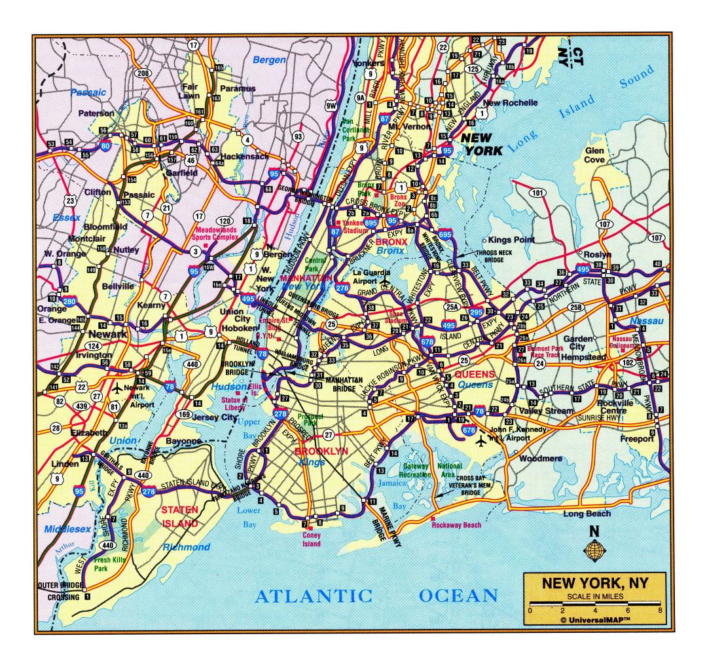
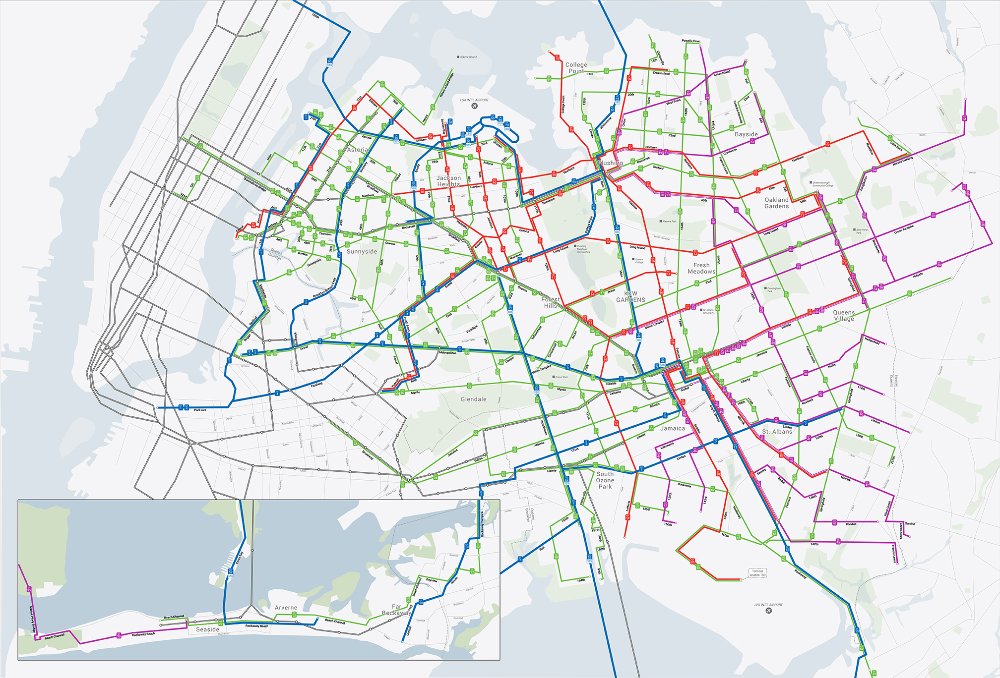
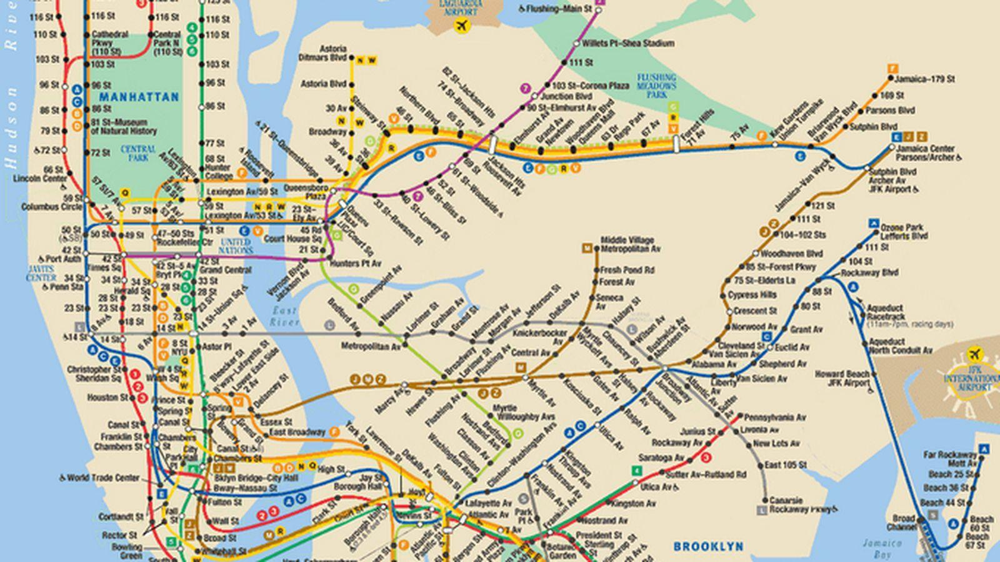

New York
New York City is the largest city of the United States. It's known for futuristic outlook, long history, lots of diverse landmarks, top-quality products and services, and a huge network of highways, railroads, and subways.
Population
Races

This city has about 8 million residents, making it the most populated city in the United States. According to this graph, at the moment of 2011, there is about 30% of white population, 20% - black, 25% - hispanic, 10% - asians, and 5% - multiracial. Compared to the values shown for the previous years, there was a significant increase of non-white population for the last 41 years. The most popular theory suggests that it's the continuation of the Great Migration, the event where Americans migrated from Southern states to Northern states in search for better living conditions.
Age & Gender

Next, the age and gender population. For the first time, this population pyramid may seem symmetrical and have an arrow-like shape, which means that this city keeps growing and has almost the same amount of male and female residents of all ages.
To some extent, that's true. But if you look at this graph deeper, you can see the paranormal spike in the ages from 25 to 34 years, and then a sudden decrease across the younger people. This is due to the recent increase in prices, and overpopulation, which could be seen by looking at some of the public places that are often overcrowded. You may also notice that there are much more females than males in the top rows with ages 75 years and older, but this feature is not unique for NYC - many other cities throughout the world have this too.
Geography
Map location


The city is located in the New York State, which is in the northeast of the United States. If we take a closer look at the map, we could see that the city is called the same way as the state it is in. This is why the official name of this city is New York City, or NYC. It is located on the southeast part of the state and is bordered by the Altantic Ocean. We may also notice that unlike most of the state, NYC is in the white area, meaning that it has almost no trees, which is reasonable for such a big city.
City map

New York City has 5 regions (or boroughs) - Bronx on the North, Queens on the East, Brooklyn on the South, Staten Island on the Southwest, and Manhattan in the center. Almost all of them are bordered between each other by the lakes, making boats useful for traveling throughout the city. Additionally, only 3 of these boroughs are bordered by the Atlantic Ocean, which is why there are little to no beaches on Manhattan and Bronx.
Climate
Climate zone

Unlike the rest of the New York State, New York City is in the humid subtropical climate zone, meaning that the city has humid summers and moderately cold winters. It's due to, once again, large population, residents periodically making surface modifications, and most importantly, being close to the Atlantic Ocean.
Temperature

The average annual temperature of New York City is 56.5°F (13.6°C). Throughout the year, it usually varies from 30°F (-1.1°C) to 76.6°F (24.8°C), which is why snowfalls there are rare and it's not a good choice for those who enjoys going to the beach frequently.
Weather
In most cases, NYC has a sunny weather. However, since its climate is relatively moderate, it often has fogs, rainfalls, and even thunderstorms.
The average New York's precipitation per year is 49.5 inches (1,257 mm), with June being the most rainy (4.54 inches or 115 mm), and February being the least rainy (3.19 inches or 81 mm). Thunderstorms there occur each 2 weeks in average, with 4 lightning strikes per square mile annually.
Wages & Prices
Minimum wage
Currently, in 2026, the legal minimum wage in New York State for all employees is 17$/hour, which is one of the highest wages in the United States. If we look at the table below, then we will see that the minimum wage keeps growing since 1960, indicating the city's economic growth. However, we can also see that through 2010s, the minimum wage more than than doubled, while for the last 6 years, the minimum wage grew by just 13%.
| Year | Hourly pay | Change |
|---|---|---|
| 1960 | 1.00$ | - |
| 1970 | 1.85$ | +85% |
| 1980 | 3.10$ | +68% |
| 1990 | 3.80$ | +23% |
| 2000 | 5.15$ | +36% |
| 2010 | 7.25$ | +41% |
| 2020 | 15.00$ | +107% |
| 2026 | 17.00$ | +13% |
Rent

Since New York is very large and fast-growing, the rent stays as one of the most annoying payments for many residents. If we look at the graph and compare it to the minimum wages, then at the moment of 2024, we will need to work for about 45 hours in Queens, 55 in Brooklyn, and 70 in Manhattan each week in order to pay for an apartment alone, which is much more than the normal work schedule - 40 hours per week.
Food
Just like rent, food prices are very high due to a lot of residents, and the farms struggling with growing crops due to the climate being temperate and frequent struggles with delivering their food products to the grocery stores and restaurants. For example, a half-gallon bottle of milk costs about 8$. If we compare it to the local wages and deduct the most likely spendings, like renting a 1-room apartment for 2000$ per month, then we'll have too few money left for food.
Transportation
Highways

Since NYC has a large area, it, correspondingly, has a huge network of highways. However, because it's also densely populated, the road situation is often tense, often leading to traffic jams or accidents. This is why moving throughout the city may be hard for those who have small driving experience or often drink alcohol.
Bus routes

Due to the New York being large, buses have an enough amount of regular customers, but because buses are also ground vehicles, just like cars, they can also get stuck in road issues like traffic jams, especially in densely populated regions like Manhattan, which explains why so many people prefer to walk or ride a bike instead.
However, we may have exceptions to the rules. One of them - Queens region that is in the East of NYC. This region has much more area and less people, which explains why there are so many bus routes spreaded out throughout the region.
Subways

Unlike the highways and buses alike, subways are the most favorite type of transportation because it's fast, cheap, and most importantly, least likely to get in an accident. However, some regions are far away from the closest subway station, while subways' trains themselves are often overcrowded, which is the reason why some people still prefer to move on the surface.